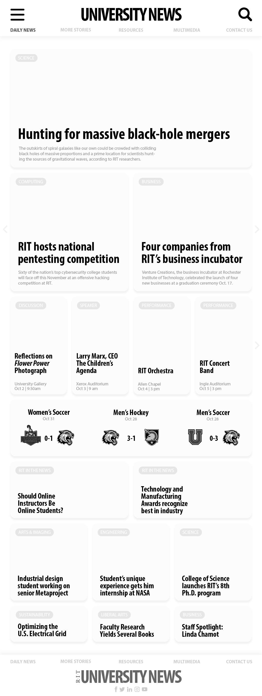
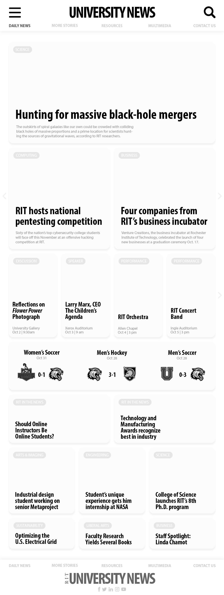

For this project I am tasked for reskinning RIT University News webpage. The goal is to modifying the look and feel of the graphic user interface without changing the underlying architecture or functionality.
The current site lacks strong hierarchy and rather looks boring.
The main users are RIT students who are interested in RIT news and events; the interface could be simpler to make the experience better to stressed college students.
There is no motion design on the site. Lack of interactiveness makes it less interesting.
Some links are totally unnecessary
Apply hierarchy in font size and restructure the visual system to make the site looks more appealing
Simpler interface by reducing unnecessary texts
Implement motion design and interactions to make the site alive
Eliminate unused links to achieve a better user experience
I created a moodboard of what the redesigned website will feel like.

A wireframe is created to visualize what the layout will be like.
.png)
A styleguide is created to polish the visual design. I choose RIT related colors in addition to fonts that matches Cary's asthetics.
.png) 
